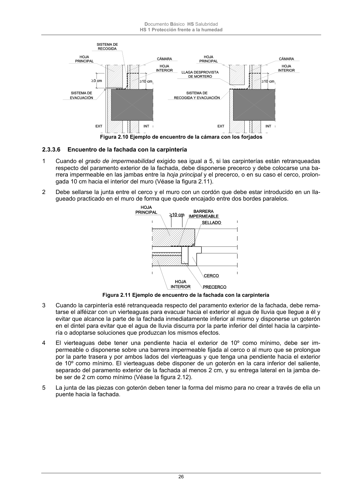

DB-HS · Página 26 · versión 2022-06-14
SHA256: 68df3caacc95f71aee2ec1ba7b2c65ae66155c21e3a8785521b8fdd4fd640d3b · página física 26 de 184 · métodos de encabezado
solo si están cotejados.
Formatos: Markdown · JSON de bloques · PDF p. 26 · imagen PNG
Documento Básico HS Salubridad HS 1 Protección frente a la humedad 26 Figura 2.10 Ejemplo de encuentro de la cámara con los forjados 2.3.3.6 Encuentro de la fachada con la carpintería 1 Cuando el grado de impermeabilidad exigido sea igual a 5, si las carpinterías están retranqueadas respecto del paramento exterior de la fachada, debe disponerse precerco y debe colocarse una ba- rrera impermeable en las jambas entre la hoja principal y el precerco, o en su caso el cerco, prolon- gada 10 cm hacia el interior del muro (Véase la figura 2.11). 2 Debe sellarse la junta entre el cerco y el muro con un cordón que debe estar introducido en un lla- gueado practicado en el muro de forma que quede encajado entre dos bordes paralelos. Figura 2.11 Ejemplo de encuentro de la fachada con la carpintería 3 Cuando la carpintería esté retranqueada respecto del paramento exterior de la fachada, debe rema- tarse el alféizar con un vierteaguas para evacuar hacia el exterior el agua de lluvia que llegue a él y evitar que alcance la parte de la fachada inmediatamente inferior al mismo y disponerse un goterón en el dintel para evitar que el agua de lluvia discurra por la parte inferior del dintel hacia la carpinte- ría o adoptarse soluciones que produzcan los mismos efectos. 4 El vierteaguas debe tener una pendiente hacia el exterior de 10º como mínimo, debe ser im- permeable o disponerse sobre una barrera impermeable fijada al cerco o al muro que se prolongue por la parte trasera y por ambos lados del vierteaguas y que tenga una pendiente hacia el exterior de 10º como mínimo. El vierteaguas debe disponer de un goterón en la cara inferior del saliente, separado del paramento exterior de la fachada al menos 2 cm, y su entrega lateral en la jamba de- be ser de 2 cm como mínimo (Véase la figura 2.12). 5 La junta de las piezas con goterón deben tener la forma del mismo para no crear a través de ella un puente hacia la fachada.
